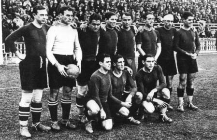
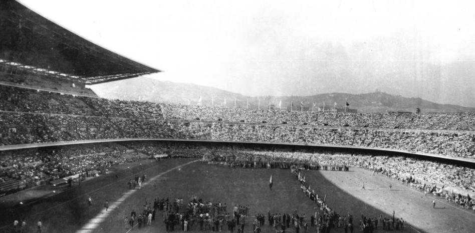
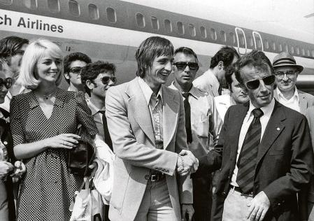
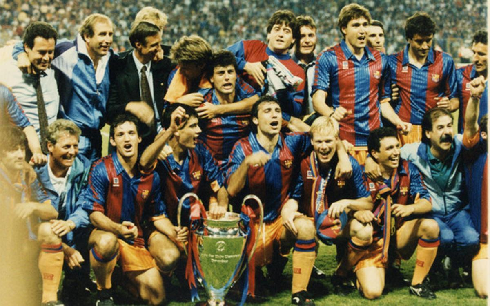
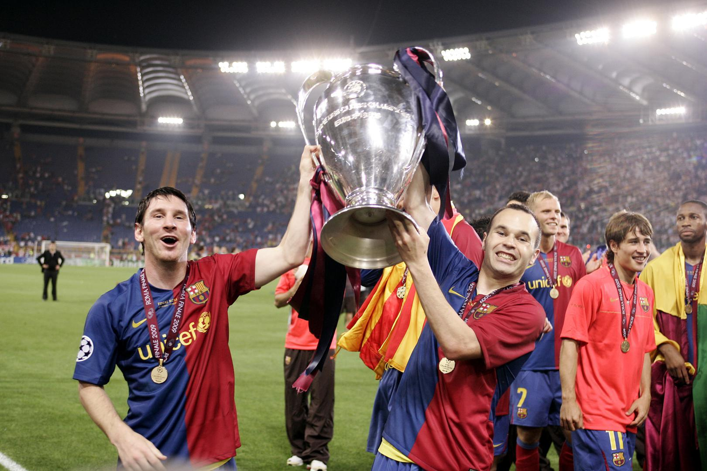
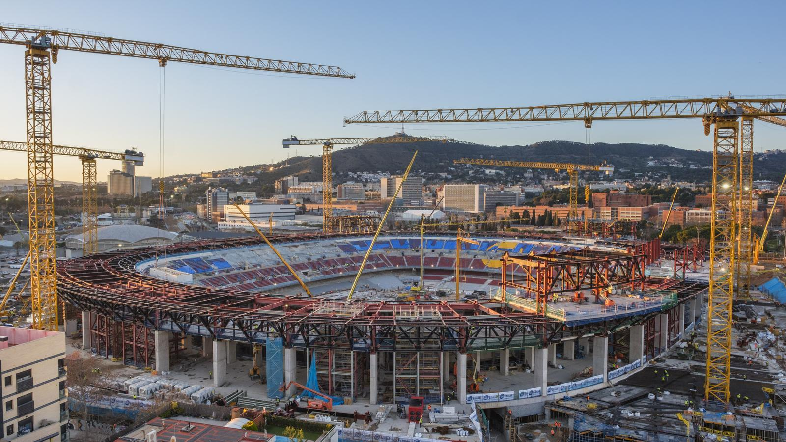

Historia del FC Barcelona
Más de 120 años de pasión
Línea del Tiempo
Fundación del Club

El 29 de noviembre de 1899, Hans Gamper funda el Foot-Ball Club Barcelona junto a un grupo de entusiastas del fútbol en el Gimnasio Solé.
Primera Liga
El Barça gana su primer título de Liga en la temporada inaugural del campeonato español, imponiéndose en un emocionante duelo con el Real Madrid.
Inauguración del Camp Nou
El 24 de septiembre se inaugura el Camp Nou con un partido contra el Warsaw de Polonia. El estadio tenía una capacidad inicial de 93,053 espectadores.
Llega Johan Cruyff
La llegada del holandés Johan Cruyff marca un antes y después en la historia del club, no solo como jugador sino posteriormente como entrenador.
Primera Copa de Europa
El "Dream Team" de Cruyff gana la primera Copa de Europa en Wembley con el mítico gol de Koeman ante la Sampdoria.
El año de los Seis Títulos
Bajo el mando de Pep Guardiola, el Barça hace historia convirtiéndose en el primer equipo en ganar los seis títulos posibles en un año natural.
Nueva Era
Inicio de las obras de remodelación del Camp Nou y consolidación de la cantera como pilar fundamental del club.
Presidentes Históricos
Joan Gamper
1908-1909, 1910-1913, 1917-1919, 1921-1923, 1924-1925
Fundador del club y presidente en cinco etapas diferentes. Estableció los cimientos del club.
Josep Sunyol
1935-1936
Presidente durante la Guerra Civil española. Fue fusilado por las tropas franquistas, convirtiéndose en un símbolo del club.
Agustí Montal
1969-1977
Presidió durante la época de Cruyff como jugador y sentó las bases para la Masía.
Josep Lluís Núñez
1978-2000
El presidente que más tiempo estuvo en el cargo. Modernizó el club y construyó la Masía.
Joan Laporta
2003-2010, 2021-actualidad
Lideró la era dorada con Guardiola y ahora dirige la remodelación del Camp Nou.
Legado y Valores
El FC Barcelona es "més que un club" (más que un club), un lema que refleja su compromiso con la sociedad catalana y sus valores:
Compromiso Social
La Fundación FC Barcelona desarrolla proyectos solidarios en todo el mundo.
La Masía
Cantera que ha formado a jugadores como Messi, Xavi e Iniesta bajo el lema "Formar personas antes que futbolistas".
Estilo de Juego
El "juego de posición" y la filosofía ofensiva son señas de identidad del club.
Catalanismo
El club ha sido un símbolo de identidad catalana, especialmente durante el franquismo.
La Masía, cantera de valores y futbolistas